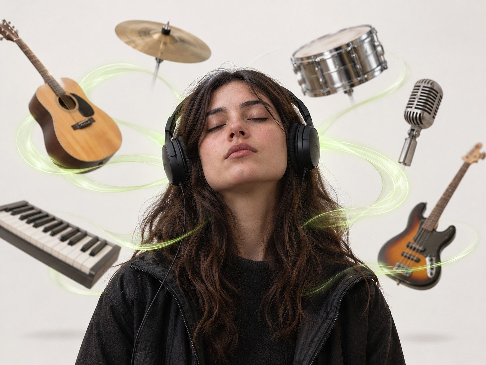
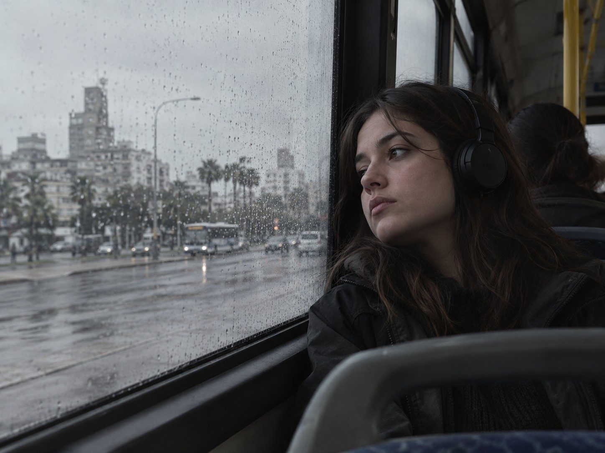
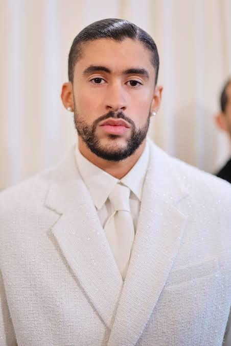
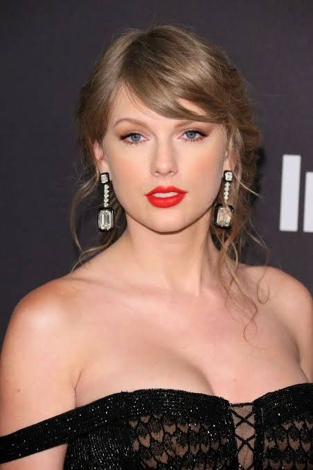
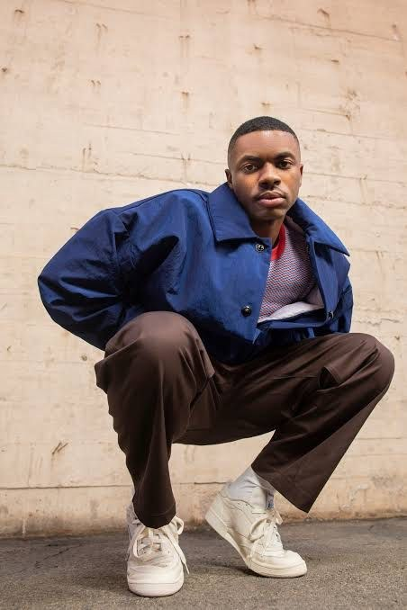

Descubrir
Playlists armadas por personas que viven de escuchar música. El algoritmo te muestra lo parecido; un curador, lo que no sabías que te faltaba.
Todo lo que hacemos nace de la música. Te acompaña cuando estudiás, trabajás, viajás o te relajás.
Creemos que puede vivirse de una forma más rica: descubierta por personas, cerca de quienes la hacen y con el sonido tal como fue grabado. Esa es la idea que ordena todo lo que hacemos.
Suscriptores y posición de mercado: estimaciones de terceros (MIDiA Research, Duetti y medios especializados, 2025–2026). La compañía no publica cifras oficiales desde 2023.

Nuestro propósito guía cómo diseñamos la app, cómo trabajamos con artistas y sellos y cómo le hablamos a cada persona que nos escucha. No le pedimos a nadie que deje lo que le gusta: la invitación es a escucharlo de otra manera.
Por eso nuestro rival no es otra aplicación. Es la rutina: la comodidad de escuchar siempre lo mismo, de fondo, sin prestarle atención. Queremos que la música vuelva a ser algo que se vive.
Llevar la mejor experiencia de escucha a cada persona.
Curada por personas y no solo por un algoritmo, sin publicidad y con el sonido como lo grabó el artista. Del otro lado, cuidamos a quienes hacen la música: pagamos a los artistas también durante la prueba gratuita y por reproducción pagamos más que el promedio del mercado.
Playlists armadas por personas que viven de escuchar música. El algoritmo te muestra lo parecido; un curador, lo que no sabías que te faltaba.
Radio en vivo, entrevistas y contenido exclusivo con quienes hacen la música, para escuchar una canción sabiendo cómo nació.
Lossless y Spatial Audio incluidos en la suscripción, sin costo extra. La misma canción, con detalles que no sabías que estaban ahí.
Jóvenes y adultos jóvenes que usan streaming, valoran descubrir cosas nuevas y llevan la música a todas partes: en el bondi, estudiando, trabajando, antes de dormir. Muchos ya nos conocen, pero usan otra plataforma como principal.
"Ya tengo todo armado" es la frase favorita de la rutina. No queremos que nadie renuncie a lo que escucha: queremos que se anime a empezar de nuevo y a vivirlo distinto. Por eso la invitación es probar un mes, sin compromiso.
Sin publicidad no necesitamos vender lo que escuchás. Tus datos no son el producto.
Detrás de cada playlist hay personas con criterio, no solo una fórmula de recomendación.
Pagamos a los artistas también durante la prueba gratuita y por reproducción más que el promedio del mercado.
El mejor sonido no es un plan aparte: Lossless y Spatial Audio vienen con la suscripción.
Cada canción te lleva a algún lado. En cada episodio, un curador de Pear Music invita a dos personas y les pide que cuenten la historia de una canción: a qué lugar, a qué momento o a qué persona las lleva cuando suena.
Es la parte "Conectar" de nuestra forma de vivir la música, en formato de conversación. Un episodio nuevo cada jueves.
Escuchá el primer episodioUna marca de música también se reconoce con los ojos cerrados. Estas son las piezas de nuestra identidad sonora.
El mismo fragmento, comprimido y en Lossless. Cambiá mientras suena.
Más de diez años de música: de una radio en vivo conducida por personas al sonido sin pérdida para todos.
Descubrí nuestra historia
De la compra de Beats a una app que se escucha en 167 países: los momentos que nos hicieron.
Nace el proyecto con la compra de Beats Music y Beats Electronics, impulsada por Jimmy Iovine y Dr. Dre.
Lanzamiento el 30 de junio en más de 100 países a la vez, con una radio global en vivo las 24 horas, conducida por personas.
Tras la carta abierta de Taylor Swift, decidimos pagar a los artistas también durante la prueba gratuita.
Primer gran rediseño: una app más simple y una identidad más limpia.
Lossless y Spatial Audio llegan a todos los suscriptores, sin costo extra.
Lanzamos una app propia para la música clásica.
Nueva interfaz con superficies translúcidas: el cambio más grande desde 2016.
“Una vez que escuchás Dolby Atmos, nunca más vas a querer escuchar música en estéreo.”Masego, músico
La música la hacen personas. Las tratamos como tales.
Más de 100 millones de canciones de artistas de todo el mundo. Para todos rige lo mismo: curaduría humana, el sonido como lo grabaron y un pago por reproducción más alto que el promedio del mercado, también durante la prueba gratuita.
“Estoy muy entusiasmado de ser parte de este proyecto con Apple Music, porque siempre quiero estar un paso adelante. Escucharme a mí mismo y a mi música en Dolby Atmos por primera vez fue una locura, me voló la cabeza.”
J Balvin · Sobre Spatial Audio. Comunicado oficial, junio de 2021.
“Desde el primer día, Apple Music apoyó mi música y mi arte, y me siento honrada y agradecida de recibir este reconocimiento como Artista del Año.”
Billie Eilish · Al ser nombrada Artista del Año, noviembre de 2024.

Bad BunnyMúsica urbana · Puerto Rico“Cuando empecé, no tenía una base de fans global. Estoy agradecido por todo lo que logré y todo lo que viví.”
Bad Bunny · Video por su premio a Artista del Año, noviembre de 2022.

Taylor SwiftPop · Estados Unidos“Estoy feliz y aliviada. Gracias por sus palabras de apoyo hoy. Nos escucharon.”
Taylor Swift · Después de que la plataforma decidiera pagar a los artistas durante la prueba gratuita. Twitter, junio de 2015.

Vince StaplesRap · Estados Unidos“Spatial Audio hace mucho más fácil captar los matices y las sutilezas, las cosas que antes se te podían escapar. Simplemente estoy contento de que podamos tener nuestras canciones en Spatial Audio.”
Vince Staples · Testimonio para la plataforma de artistas.
“Una vez que escuchás Dolby Atmos, nunca más vas a querer escuchar música en estéreo.”
Masego · Al escuchar su música en Dolby Atmos por primera vez.
Frases reales, traducidas del inglés.
Con The Tortured Poets Department, la artista más reproducida de 2024 en el servicio.
Kendrick Lamar tuvo la canción más reproducida de 2024 en el mundo.
Una plataforma propia con datos de audiencia para artistas y sellos: quién te escucha, dónde y con qué canciones, para que conozcas a tu público y decidas tu próximo paso.
Conocé las herramientasNuestro curador invitó a dos personas y les pidió que eligieran una canción y contaran a dónde las lleva: un lugar, un momento, una historia. El primer episodio de Entre canciones, el podcast de Pear Music.
Un episodio nuevo se desbloquea cada jueves.
Un curador cuenta su método: escuchar, descartar, ordenar y volver a empezar.
Lossless explicado con una sola canción y unos buenos auriculares.
Armar tu biblioteca desde cero como una oportunidad, no como un trámite.
Cómo es una hora al aire en nuestra radio, contada por quienes la conducen.
Spatial Audio: qué cambia cuando la música deja de venir solo de adelante.
Episodios de ejemplo, creados para este ejercicio.
Cada canción guarda una historia. Acá se cuenta.
Entre canciones es la parte "Conectar" de Pear Music en formato de conversación: un curador trae a dos invitados y cada uno cuenta la historia que le despierta una canción. No importa quién la escribió, sino a dónde te lleva a vos. Gratis para suscriptores, sin publicidad.